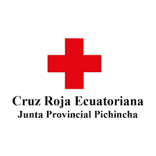
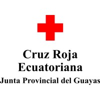
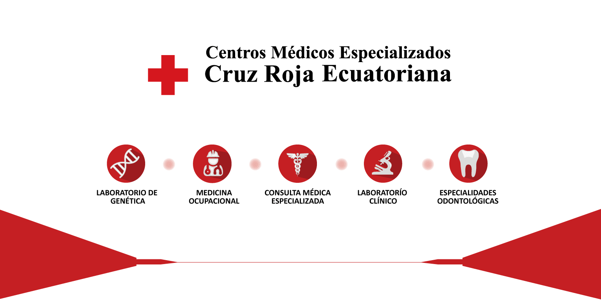

QUIÉNES SOMOS
La Cruz Roja Ecuatoriana es una organización humanitaria sin fines de lucro que brinda asistencia en emergencias y desastres naturales, promueve la salud y el bienestar, y fomenta la cultura de la paz. Nuestra misión es aliviar el sufrimiento humano, proteger la vida y la salud, y garantizar el respeto por la dignidad humana.

- Fundada en 1910, la Cruz Roja Ecuatoriana ha estado al servicio de la comunidad durante más de un siglo.
- Contamos con programas de primeros auxilios, donación de sangre, y atención en desastres naturales.
- Estamos presentes en todo el territorio ecuatoriano con más de 100 filiales y miles de voluntarios dedicados.
UBICACIONES
| Quito - Matriz Av. Colón E4-48 y 6 de Diciembre Teléfono: (02) 2507-407 |
Guayaquil - Filial Av. Quito y Bolivia Teléfono: (04) 2517-770 |
|---|---|
|  |  |
ESPECIALIDADES
Ofrecemos una amplia gama de servicios médicos y de salud, incluyendo primeros auxilios, atención prehospitalaria, asistencia en desastres, y programas de prevención y promoción de la salud. Nuestro equipo de profesionales está dedicado a brindar atención de alta calidad a toda la comunidad.
MÁS SERVICIOS
Además de nuestros servicios médicos, ofrecemos programas educativos, talleres de capacitación en primeros auxilios, y campañas de donación de sangre. También estamos comprometidos con la asistencia humanitaria en situaciones de emergencia y desastres naturales.